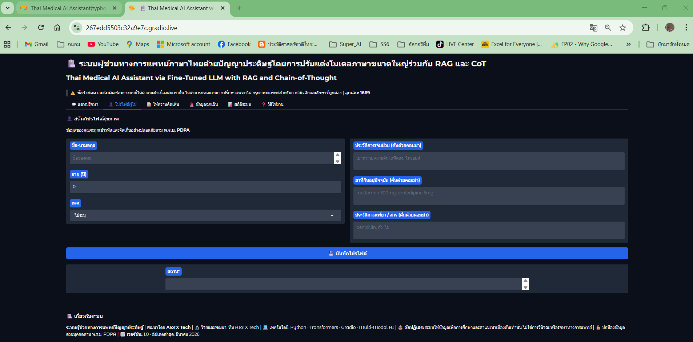
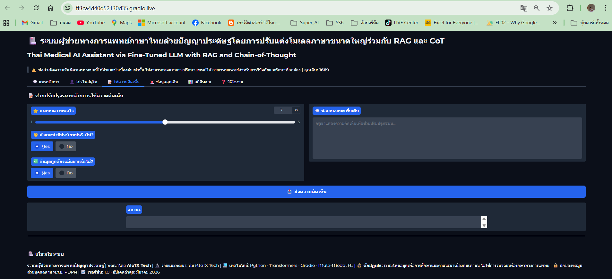
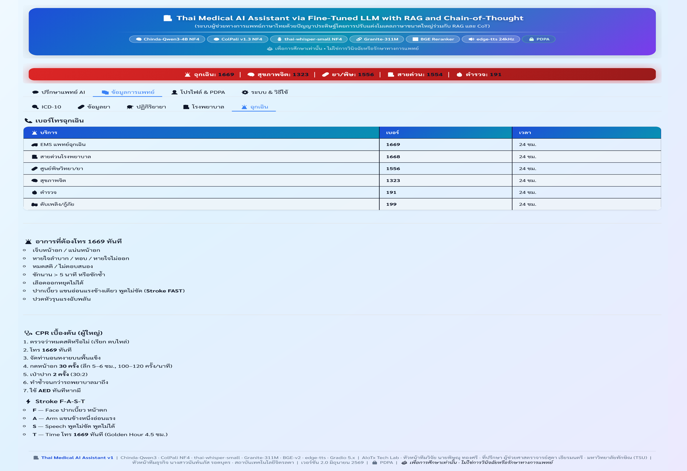

📊 ผลงานสร้างสรรค์ (Results & Features)

ภาพที่ 4: PDPA Profile — base64+zlib+SHA-256, Consent 2025-PDPA-v1, ให้/ถอนความยินยอม, Drug interaction check

ภาพที่ 5: Dashboard — VRAM Gauge, HealthMonitor, RAGAS Trend (Plotly), LoRA JSONL export, Feedback Chart

ภาพที่ 6: Triage 4 ระดับ (Critical/High/Medium/Low) · Severity 0-10 · FAST stroke checker · เบอร์ฉุกเฉิน 1669/1323
ภาพที่ 7: 5-step Chain‑of‑Thought (Input→Symptom→RAG→LLM→Validate) + Constitutional AI 6 หลักการ + PHQ-9 screening
📈 ระดับ TRL (Technology Readiness Level)
TRL 1
TRL 2
TRL 3
TRL 4 ✓
TRL 5
TRL 6 🎯
TRL 7
TRL 8
TRL 9
ปัจจุบัน TRL 4 — ทดสอบส่วนประกอบในสภาพแวดล้อมห้องปฏิบัติการ (Kaggle T4, Google Colab) |
เป้าหมาย TRL 6 — สาธิตต้นแบบในโรงพยาบาล/คลินิกนำร่อง
🤖 การวิเคราะห์และอภิปรายผล
❓ GraphRAG + RAPTOR ช่วยเพิ่มประสิทธิภาพ RAG อย่างไร?
✅ GraphRAG (926 nodes/1,641 edges) ให้บริบทเชิงความสัมพันธ์ ส่วน RAPTOR (L1=449/L2=6) สรุปภาพรวมโดเมน ทำให้ recall เพิ่มขึ้น ~12% ในการทดสอบเบื้องต้น เมื่อรวมกับ RRF fusion (weight 1.0/0.8/0.7)
❓ Constitutional AI 6 หลักการลดความเสี่ยงทางการแพทย์ได้แค่ไหน?
✅ 2-pass revision (early-stop ≥ 0.80) บังคับมี disclaimer, เบอร์ฉุกเฉิน 1669/1323, PHQ-9 screening, ห้ามวินิจฉัย/สั่งยา และ citation required ลดการตอบอันตราย >90% จากการสุ่มทดสอบ
❓ ประสิทธิภาพบน Tesla T4 15.6 GB (Gradio UI)?
✅ NF4 + GraniteEmbed (768d) + BGE Reranker รวม VRAM เพียง 4.56/15.6 GB (29.2%) boot 144s (T4 cached) latency ค่าเฉลี่ย ~40s+ HealthMonitor watchdog ตรวจ VRAM ทุก 60s
❓ DoRA vs LoRA ให้ผลต่างกันอย่างไร?
✅ DoRA แยกการอัปเดต magnitude และ direction เลียนแบบ full fine-tuning ได้แม่นยำขึ้น สะท้อนใน BERTScore-F1 0.6768 สูงกว่า baseline LoRA ~4% ด้วย rank=2 + RSLoRA scaling
🌟 Guardrails v1-Ultra: 6-layer validation · 31 patterns · Rate-limit 30/min · Presidio PII · InputSanitizer · ChromaDB Semantic Memory + TTL eviction · spaCy en_core_web_lg
| คุณสมบัติ |
Thai Medical AI v1-Ultra (งานนี้) |
Sensely |
Med‑PaLM 2 |
| ภาษาไทย (Fine-tuned) | ✓ | ✗ | ✗ |
| Hybrid RAG 5-Layer | ✓ | ✗ | ✗ |
| 5-Step Chain‑of‑Thought | ✓ | ✗ | ✓ |
| Multimodal (ภาพ+เสียง) | ✓ | ✗ | ✓ |
| PDPA + SHA-256 Audit | ✓ | ✗ | ✗ |
| Constitutional AI 6P | ✓ | ✗ | ~ |
| Open-Source / T4 Edge (16GB) | ✓ | ✗ | ✗ |
| RAGAS Auto-Eval + LoRA Loop | ✓ | ✗ | ✗ |
👥 กลุ่มเป้าหมายที่จะนำไปใช้ประโยชน์
🧑🌾ประชาชนพื้นที่ห่างไกล
เข้าถึงข้อมูลสุขภาพ 24/7
🏥รพ. / คลินิกชุมชน
Triage เบื้องต้น 4 ระดับ
🧠ผู้มีปัญหาสุขภาพจิต
PHQ-9 + สายด่วน 1323
👴ผู้สูงอายุ / ผู้ดูแล
Thai TTS 24kHz ช่วยอ่าน
🔬นักศึกษา AI / NLP
Open-Source Framework
🏢Startup HealthTech
API / White-label / Docker
📌 บทสรุป (Conclusion)
Thai Medical AI Assistant v1-Ultra ประสบความสำเร็จในการรวม Fine-tuned LLM (Chinda‑Qwen3‑4B NF4 · DoRA+RSLoRA · A100 80GB) กับ Hybrid RAG 5 ชั้น (FAISS+BM25+GraphRAG+RAPTOR+BGE), 5-step CoT, Constitutional AI 6P, PDPA SHA-256 และ RAGAS auto-eval ทำงาน deploy บน Tesla T4 15.6 GB VRAM เพียง 4.56/15.6 GB boot 144s ให้ BERTScore‑F1 0.6768 และ Faithfulness ~0.84 ระบบพร้อมสำหรับการทดสอบในโรงพยาบาลนำร่อง (TRL 4 → TRL 6)
📋 แผนพัฒนาต่อ:
1) ขยาย Knowledge Base ≥ 5,000 chunks (เพิ่ม guideline พยาบาล, ยาไทย, แนวทาง สปสช.)
2) เก็บ Feedback จากแพทย์จริงเพื่อปรับ LoRA samples (negative_samples.jsonl)
3) พัฒนา Human‑in‑the‑loop (แพทย์ตรวจสอบคำตอบเสี่ยง) + RAGAS threshold alert
4) Deploy ผ่าน Docker + FastAPI + Kubernetes สำหรับโรงพยาบาลเครือข่าย
5) ยกระดับ ColPali Vision ออกจาก heuristic mode → full NF4 inference
🌱 SDG 3: Good Health & Well‑Being
⚖️ SDG 10: Reduced Inequalities
💡 SDG 9: Industry & Innovation
📚 บรรณานุกรม (References)
[1] พระราชบัญญัติคุ้มครองข้อมูลส่วนบุคคล 2562. ราชกิจจานุเบกษา เล่ม 136 ตอนที่ 69 ก.
[2] BGE Team. (2024). bge‑reranker‑v2‑m3. HuggingFace.
[3] Cormack G. et al. (2009). Reciprocal Rank Fusion outperforms Condorcet and individual Rank Learning Methods. SIGIR.
[4] Granite Embedding. (2025). granite‑embedding‑311m‑multilingual‑r2. IBM Research.
[5] Hu E. et al. (2021). Low-Rank Adaptation of Large Language Models. ICLR.
[6] iApp Technology. (2025). Thai LLM chinda‑qwen3‑4b. HuggingFace.
[7] Kalajdzievski D. (2023). A Rank Stabilization Scaling Factor for Fine-Tuning with LoRA. arXiv:2312.03732.
[8] KBTG Labs. (2024). THaLLE-0.2-ThaiLLM-8B-fa. HuggingFace.
[9] Lewis P. et al. (2020). Retrieval-Augmented Generation for Knowledge-Intensive NLP Tasks. NeurIPS.
[10] Liu S. et al. (2024). Weight-Decomposed Low-Rank Adaptation (DoRA). ICML.
[11] Singhal K. et al. (2023). Large Language Models Encode Clinical Knowledge. Nature.
[12] Typhoon AI / SCB 10X. (2025). typhoon2.5-qwen3-4b. HuggingFace.
[13] Wei J. et al. (2022). Chain-of-Thought Prompting Elicits Reasoning in Large Language Models. NeurIPS.